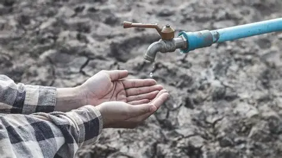
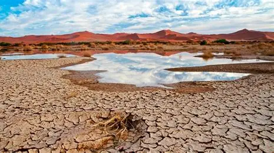
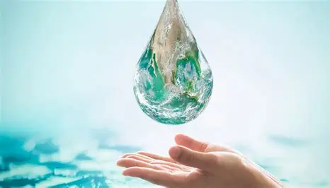

Causas
El crecimiento de la población, la contaminación y la sobreexplotación de recursos hídricos contribuyen a la escasez de agua.
Un desafío global que requiere la colaboración de todos para garantizar agua potable a las futuras generaciones.
Saber másEl agua es esencial para la vida. Sin embargo, millones de personas sufren problemas relacionados con la falta de acceso a agua limpia debido al cambio climático, la contaminación y el consumo excesivo.

El crecimiento de la población, la contaminación y la sobreexplotación de recursos hídricos contribuyen a la escasez de agua.

Menor producción agrícola, problemas sanitarios y daños a ecosistemas son algunas de sus consecuencias.

Reducir el desperdicio, reutilizar agua y proteger las fuentes naturales son acciones fundamentales.